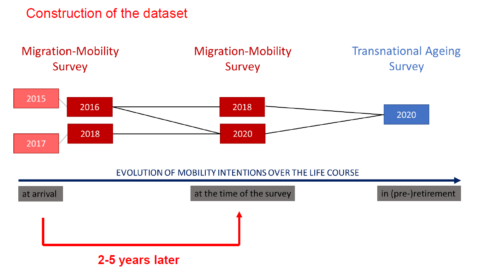

Evolution of Mobility Intentions over the Life Course among Migrants with a Transnational Family
Introduction
Multiple migration phases, transnational lifestyle with multiple residences in different countries at the same time (Horn & Schweppe 2017; Amelina & Faist, 2012), serial or circular migration (Zufferey, 2019), and transnational family configurations (Bryceson and Vuorela 2002)
“Families that live some or most of the time separated from each other, yet hold together and create something that can be seen as a feeling of collective welfare and unity, namely ‘familyhood’, even across national borders” (Bryceson & Vuorela, 2002, p. 3)
Among migrants living in Switzerland, 7 out of 10 have close family members living abroad (SFSO 2019)
Mobility and return migration
Decision based on the individualistic maximization of utility (NET) and/or on importance of social network (NEM - in host country and abroad) (Borjas & Bratsberg, 1996)
Mobility/emigration intentions are good predictors of mobility/emigration behaviors (Wanner, 2020; Bradley et al. 2008)
Family events (union formation, union dissolution, childbirth, etc) trigger and job loss restrains moves (de Groot et al. 2011)
Focus on the link between return migration and transnational families using a life trajectory approach
Research questions
Is having family members abroad associated with stronger return intentions ?
Is this observed at every point during the life course ?
How life trajectories affect return intentions ?
(new) How external event such as the pandemic impact migration intention?
Data and Methods
Data
Methods
Pseudo-panel analyses



Summary
Period of the life determines mobility intentions (related to working and non working ages)
- In general, migrants of the older cohort are associated with higher intentions to return/move abroad
Having family abroad is a pull factor for (pre –)retirees’ return/re emigration intentions
This effect becomes stronger for over the life cycle
less important for people of working ages who recently arrived in
Limits
Methodological choice of using two different (but complementary) surveys
Selection effect: those who have high mobility intentions may have already left
Voluntary or involuntary transnational arrangements? (Levin 2004; Roseneil 2006)
No information about where the other members of the (extended) transnational family live (country of origin, another country, …) and the strength of family ties
Next step: Covid-19
The pandemic had an impact on the physical ability to travel, with countries closing their borders and restricting mobility to varying degrees (Bloomfield & Ratha, 2020)
- Announcements of border closures in certain countries prompted many people to return to their home countries out of concern about being stranded without income and lacking access to social protections.
- Stranded migration has led to a significant number of individuals worldwide experiencing precarious situations.
Next step: Covid-19
Factor affecting return migration
Economic: Job loss or Income loss
Health risk: Access to health care
Travel restriction: Prevent individual from moving
Covid-19: In Switzerland (1)
The use of short-time work measures helped mitigate some job losses.
Companies could temporarily reduce employees’ working hours.
The unemployment insurance fund would cover 80% of the lost income from the reduced hours.
This allowed employees to retain 90% of their original salary in many cases.
Covid-19: In Switzerland (2)
Travel restriction
Border closed from March 17th to June 15th
Testing and Quarantine for high risk country
Next step: Covid-19 case ()
Covid-19: impacted the 2020 MMS and TASwave since the data was collected in this period
Weak impact on the migration plan of the individuals (MMS) but slight difference for recently arrived migrants
Only 3% of MMS respondant reported that the Covid-19 outbreak affected their plan regarding their stay in Switzerland.
It is unlinkely to have an effect
Next step: Covid-19
Next step: Covid-19
Next step: Anchoring
Limit: Strength of family ties unknown
Anchoring: Way migrants create reference point to improve their socio-psychological stability
Embedding: Way migrants integrate themselves into the host society.
Adding the level anchoring variable might
- Anchoring = Attachment to Switzerland - Attachment to country of origin
Limits:
Attachment to country of origin missing in TAS
Share willing to go to the country of origin: 52% MMS and 73% TAS